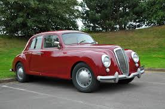
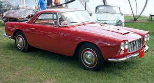
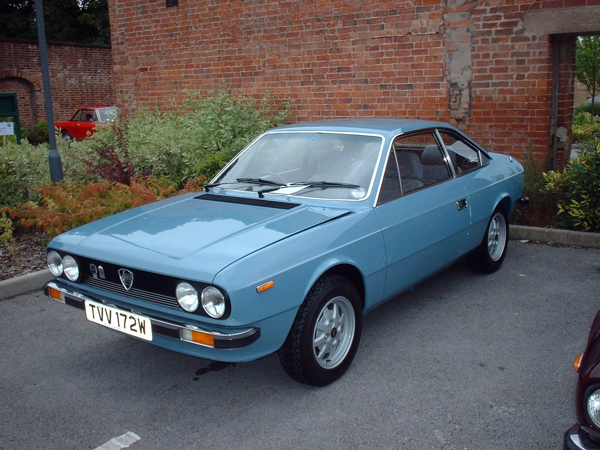
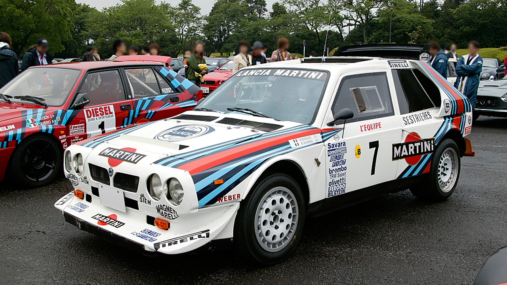
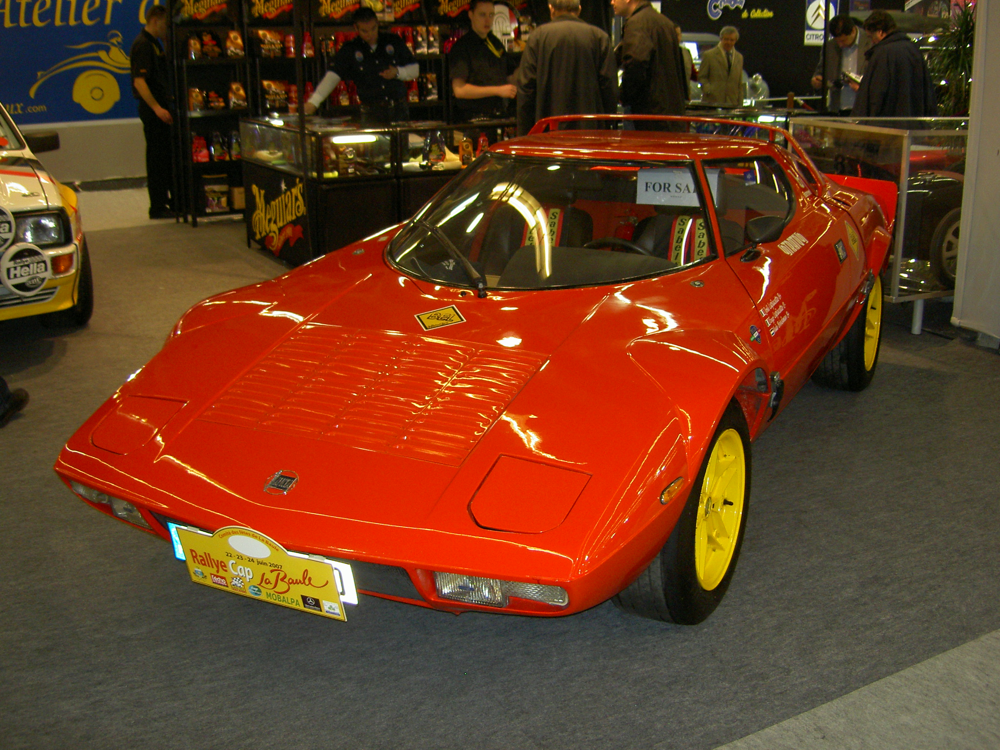

Modell: Lancia Aurelia
Baujahr: 1950-1958
Produktionsstückzahl: 18,000+
Motor: V6, 2.0L
Leistung: 118 PS
Höchstgeschwindigkeit: 170 km/h

Modell: Lancia Flaminia
Baujahr: 1957-1970
Produktionsstückzahl: 20,000+
Motor: V6, 2.5L
Leistung: 140 PS
Höchstgeschwindigkeit: 175 km/h

Modell: Lancia Beta
Baujahr: 1972-1984
Produktionsstückzahl: 130,000+
Motor: 4-Zylinder, 1.6L
Leistung: 100 PS
Höchstgeschwindigkeit: 180 km/h

Modell: Lancia Delta
Baujahr: 1979-1994
Produktionsstückzahl: 1,300,000+
Motor: 4-Zylinder, 1.3L
Leistung: 80 PS
Höchstgeschwindigkeit: 165 km/h

Modell: Lancia Stratos
Baujahr: 1972-1974
Produktionsstückzahl: 500+
Motor: V4, 2.4L
Leistung: 190 PS
Höchstgeschwindigkeit: 200 km/h